Contents
clear all; close all; clc;
1 - Sixth-Order Digital Butterworth Lowpass IIR Filter
figure;
[a,b] = butter(6,0.33);
freqz(a,b);
figure;
zplane(a,b);8
figure;
impz(a,b,20);
ans =
8
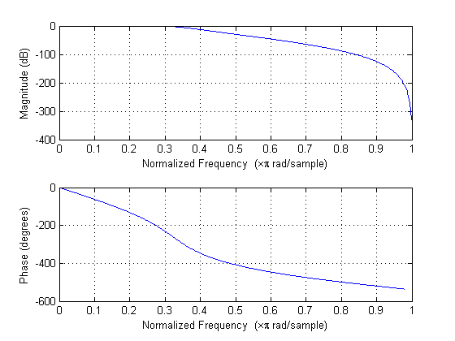 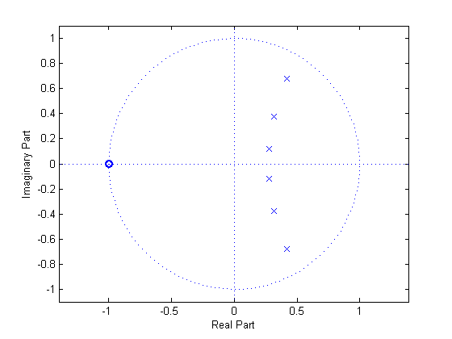 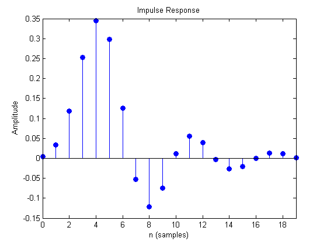
2 - Sixth-Order Digital Chebyshev Lowpass IIR Filter
figure;
[a,b] = cheby1(6,0.5,0.33);
freqz(a,b);
figure;
zplane(a,b);
figure;
impz(a,b,20);
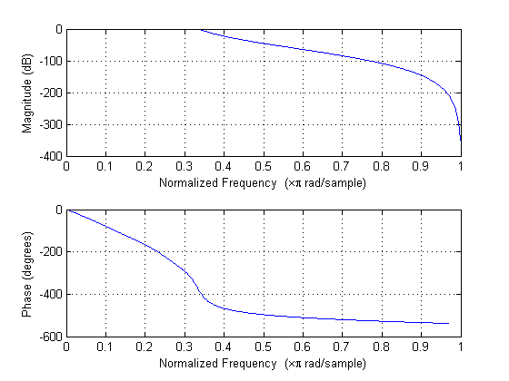 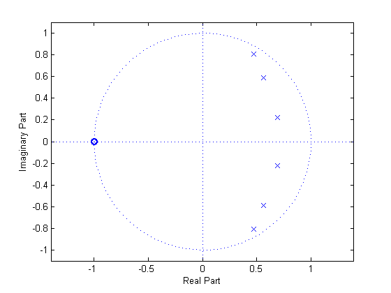 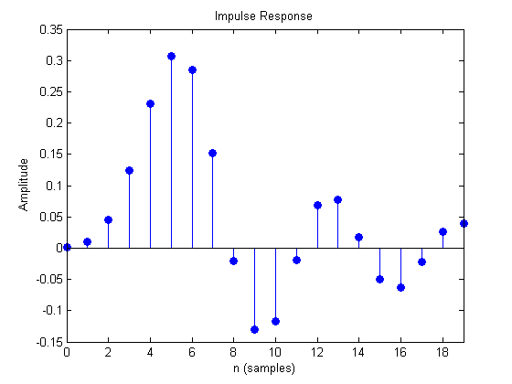
3 - Sixth-Order Digital Elliptic Lowpass IIR Filter
figure;
[a,b] = ellip(6,0.5,30,0.33);
freqz(a,b);
figure;
zplane(a,b);
figure;
impz(a,b,20);
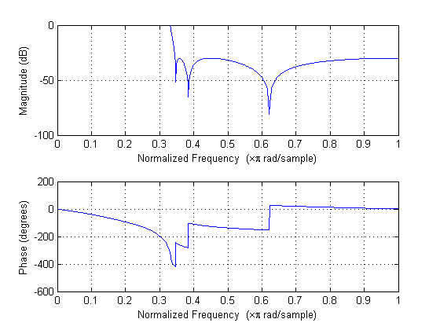 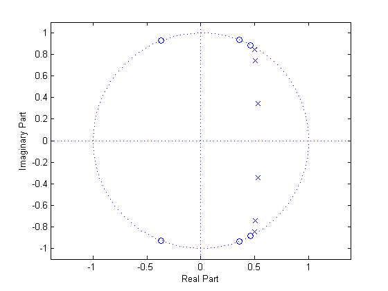 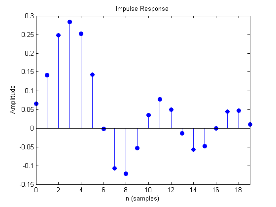
4 - Compare the Order of the Three Filter Design Methods
[n1,Wn] = buttord(0.45,0.5,0.1,40);
[n2,Wn] = cheb1ord(0.45,0.5,0.1,40);
[n3,Wn] = ellipord(0.45,0.5,0.1,40);
5 - Rectangular and Hamming Window Design
wc = 0.33*pi;
n = (0:28);
idfilt = sin(wc.*(n-14))./(pi*(n-14));
idfilt(15) = (1/pi);
rect = rectwin(29)';
win1 = idfilt.*rect;
figure;
stem(n,win1);
title('Impulse Response of Rectangular Window');
xlabel('Time (n)');
ylabel('Amplitude');
[h1,w1] = freqz(win1);
w1 = w1/pi;
figure;
plot(w1,abs(h1));
axis([0 1 -.25 1.25]);
title('Frequency Response of Rectangular Window');
xlabel('Frequency (Hz)/pi');
ylabel('Magnitude');
ham = hamming(29)';
win2 = idfilt.*ham;
figure;
stem(n,win2);
title('Impulse Response of Hamming Window');
xlabel('Time (n)');
ylabel('Amplitude');
[h2,w2] = freqz(win2);
w2 = w2/pi;
figure;
plot(w2,abs(h2));
axis([0 1 -.25 1.25]);
title('Frequency Response of Hamming Window');
xlabel('Frequency (Hz)/pi');
ylabel('Magnitude');
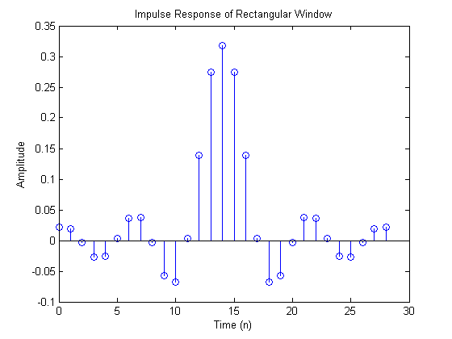 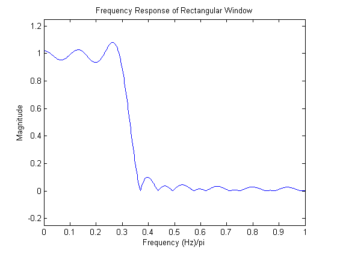 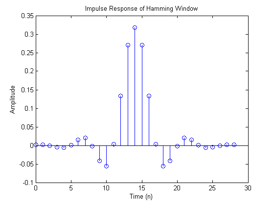 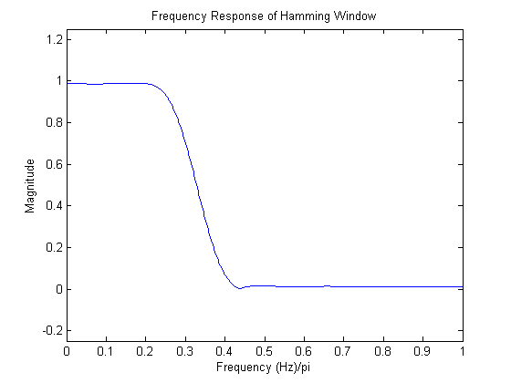
6 - Kaiser Window Design
kai1 = kaiser(29,4)';
win3 = idfilt.*kai1;
figure;
stem(n,win3);
title('Impulse Response of Kaiser Window, Beta = 4');
xlabel('Time (n)');
ylabel('Amplitude');
[h3,w3] = freqz(win3);
w3 = w3/pi;
figure;
plot(w3,abs(h3));
axis([0 1 -.25 1.25]);
title('Frequency Response of Kaiser Window, Beta = 4');
xlabel('Frequency (Hz)/pi');
ylabel('Magnitude');
kai2 = kaiser(29,6)';
win4 = idfilt.*kai2;
figure;
stem(n,win4);
title('Impulse Response of Hamming Window, Beta = 6');
xlabel('Time (n)');
ylabel('Amplitude');
[h4,w4] = freqz(win4);
w4 = w4/pi;
figure;
plot(w4,abs(h4));
axis([0 1 -.25 1.25]);
title('Frequency Response of Kaiser Window, Beta = 6');
xlabel('Frequency (Hz)/pi');
ylabel('Magnitude');
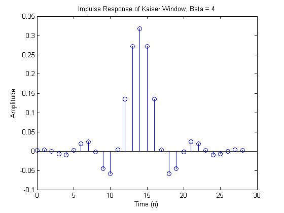 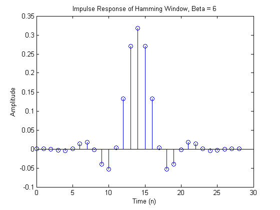 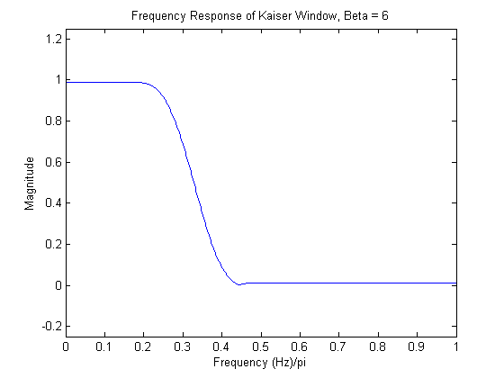
7 - Optimal Lowpass Filter
h = firpm(28, [0 0.30 0.36 1], [1 1 0 0]);
n = (0:28);
[h5,w5] = freqz(h);
w5 = w5/pi;
figure;
plot(w5,abs(h5));
h5 = abs(h5);
ind = find(w5>0.3);
ind = ind(1);
h51 = h5(1:ind);
maxpass = max(h51)-1;
minpass = 1-min(h51);
del_p = max(maxpass,minpass);
ind2 = find(w5>0.36);
ind2 = ind2(1);
h52 = h5(ind2:end);
maxpass2 = max(h52);
del_s = maxpass2;
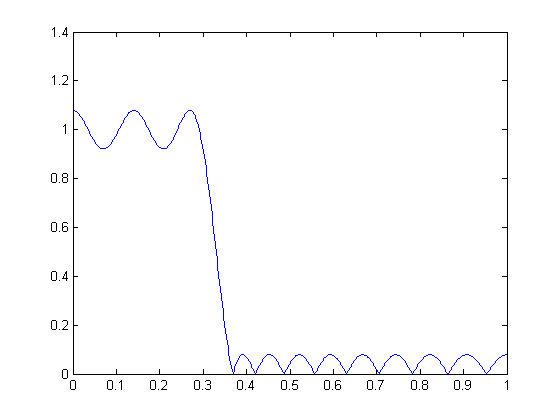
8 - Varying the Passband Edge
fp = 0.27;
h = firpm(28, [0 fp 0.36 1], [1 1 0 0]);
n = (0:28);
[h6,w6] = freqz(h);
w6 = w6/pi;
figure;
plot(w6,abs(h6));
h6 = abs(h6);
ind = find(w6>fp);
ind = ind(1);
h61 = h6(1:ind);
maxpass = max(h61)-1;
minpass = 1-min(h61);
del_p = max(maxpass,minpass);
ind2 = find(w6>0.36);
ind2 = ind2(1);
h62 = h6(ind2:end);
maxpass2 = max(h62);
del_s = maxpass2;
fp = 0.33;
h = firpm(28, [0 fp 0.36 1], [1 1 0 0]);
n = (0:28);
[h6,w6] = freqz(h);
w6 = w6/pi;
figure;
plot(w6,abs(h6));
h6 = abs(h6);
ind = find(w6>fp);
ind = ind(1);
h61 = h6(1:ind);
maxpass = max(h61)-1;
minpass = 1-min(h61);
del_p = max(maxpass,minpass);
ind2 = find(w6>0.36);
ind2 = ind2(1);
h62 = h6(ind2:end);
maxpass2 = max(h62);
del_s = maxpass2;
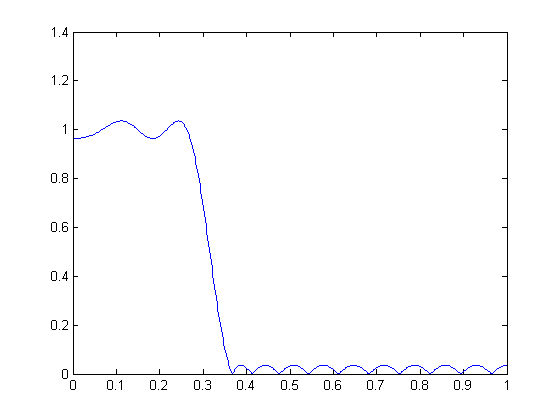 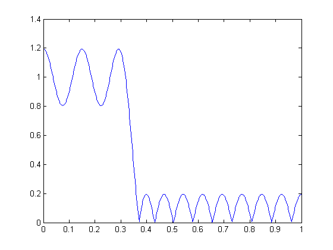
9 - Varying the Transition Bandwidth
tbw = 0.15
h = firpm(28, [0 0.33-tbw 0.33+tbw 1], [1 1 0 0]);
fp = 0.33-tbw;
fs = 0.33+tbw;
n = (0:28);
[h7,w7] = freqz(h);
w7 = w7/pi;
figure;
plot(w7,abs(h7));
h7 = abs(h7);
ind = find(w7>fp);
ind = ind(1);
h71 = h7(1:ind);
maxpass = max(h71)-1;
minpass = 1-min(h71);
del_p = max(maxpass,minpass);
ind2 = find(w7>fs);
ind2 = ind2(1);
h72 = h7(ind2:end);
maxpass2 = max(h72);
del_s = maxpass2;
tbw = 0.01
h = firpm(28, [0 0.33-tbw 0.33+tbw 1], [1 1 0 0]);
fp = 0.33 - tbw;
fs = 0.33 + tbw;
n = (0:28);
[h8,w8] = freqz(h);
w8 = w8/pi;
figure;
plot(w8,abs(h8));
h8 = abs(h8);
ind = find(w8>fp);
ind = ind(1);
h81 = h8(1:ind);
maxpass = max(h81)-1;
minpass = 1-min(h81);
del_p = max(maxpass,minpass);
ind2 = find(w8>fs);
ind2 = ind2(1);
h82 = h8(ind2:end);
maxpass2 = max(h82);
del_s = maxpass2;
tbw =
0.1500
tbw =
0.0100
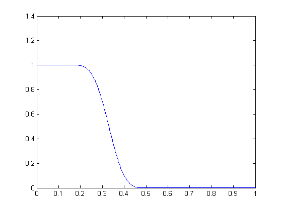 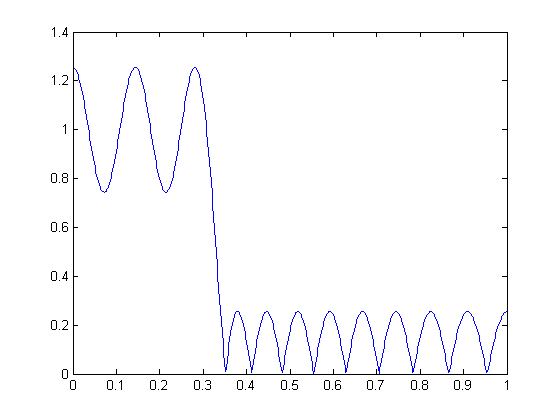
10 - Optimal vs. Window FIR Design
wp = 0.1955;
ws = 0.4329;
h = firpm(28, [0 wp ws 1], [1 1 0 0]);
n = (0:28);
[h9,w9] = freqz(h);
h9 = abs(h9);
w9 = w9/pi;
ind1 = find(w9>wp);
ind1 = ind1(1);
h91 = h9(1:ind1);
maxpass = max(h91)-1;
minpass = 1-min(h91);
del_p = max(maxpass,minpass);
ind2 = find(w9>ws);
ind2 = ind2(1);
h92 = h9(ind2:end);
maxpass2 = max(h92);
del_s = maxpass2;
figure;
plot(w9,h9);
axis([0 wp .998, 1.002]);
figure;
plot(w9,h9);
axis([ws 1 0 .004]);
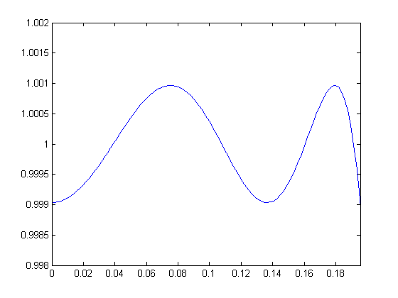 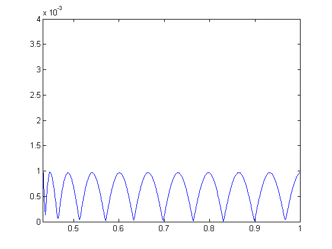
11 - Changing Filter Length
h = firpm(38, [0 0.3 0.36 1], [1 1 0 0 ]);
n = (0:28);
[H,W] = freqz(h);
H = abs(H);
W = W/pi;
figure;
hold on;
plot(W,H,'r');
plot(W,h5);
title('29- and 39-Length Filters');
xlabel('Frequency (Hz)');
ylabel('Amplitude');
hleg1 = legend('Length: 39','Length: 29');
ind1 = find(W>0.3);
ind1 = ind1(1);
H1 = H(1:ind1);
maxpass = max(H1)-1;
minpass = 1-min(H1);
del_p = max(maxpass,minpass);
ind2 = find(W>0.36);
ind2 = ind2(1);
H2 = H(ind2:end);
maxpass2 = max(H2);
del_s = maxpass2;
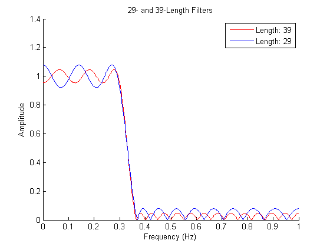
12 - Optimal FIR vs. Elliptic IIR Design
h = firpm(102, [0 0.45 0.5 1], [1 1 0 0], [5 1]);
n = (0:102);
[H,W] = freqz(h);
H = abs(H);
maxH = max(H);
W = W/pi;
ind1 = find(W>0.45);
ind1 = ind1(1);
H1 = H(1:ind1);
maxpass = max(H1)-1;
minpass = 1-min(H1);
del_p = max(maxpass,minpass);
ind2 = find(W>0.5);
ind2 = ind2(1);
H3 = H(ind2:end);
maxpass2 = max(H3);
del_s = maxpass2;
h = firpm(89, [0 0.45 0.5 1], [1-del_p 1-del_p 0 0], [2.56 1]);
[H,W] = freqz(h);
H = abs(H);
maxH2 = max(H);
W = W/pi;
figure;
plot(W,H);
axis([0 1 0 1.1]);
H2 = 20*log10(H);
figure;
plot(W,H2)
axis([0 1 -110 5]);
ind1 = find(W>0.45);
ind1 = ind1(1);
ind1 = H2(1:ind1);
maxpass = max(ind1);
minpass = min(ind1);
idrip = maxpass-minpass;
ind2 = find(W>0.5);
ind2 = ind2(1);
ind2 = H2(ind2:end);
maxpass = max(ind2);
atten = minpass-maxpass;
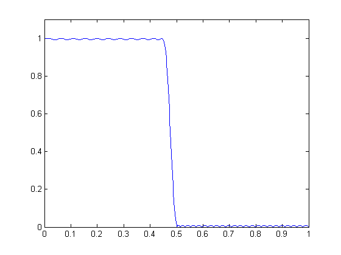 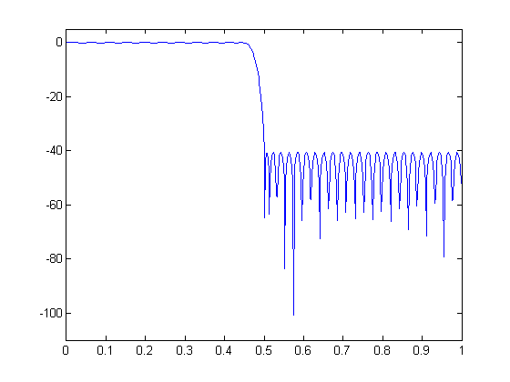